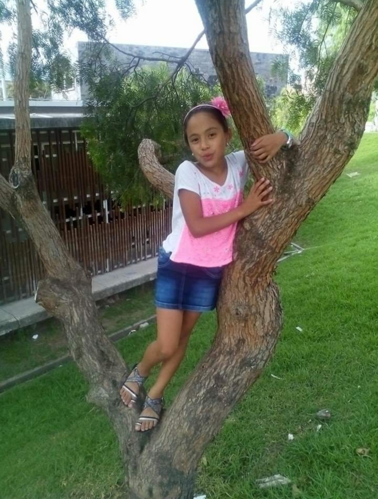
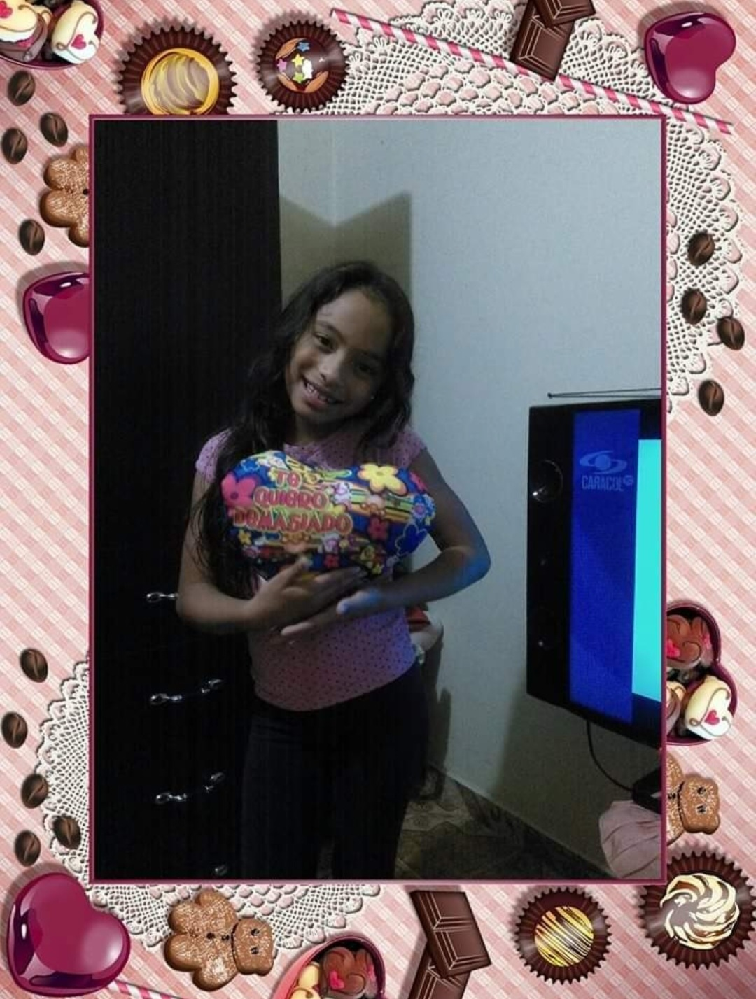
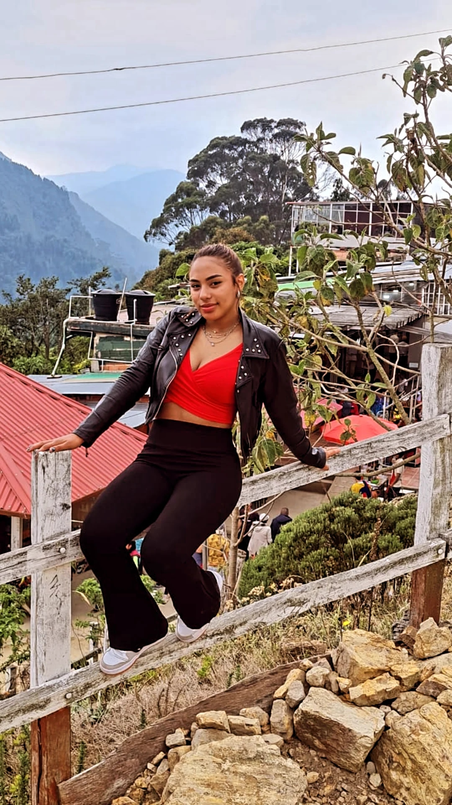

Mi Proyecto de Vida
Mi vida

Mi pasado:
Uno de los momentos más significativos en mi vida ocurrió cuando apenas tenía un año. Me llamo Andrea Vanesa Acosta Martínez, nacida el 21 de agosto de 2024 en Montería, Córdoba. Aunque mi tiempo en mi ciudad natal fue breve, marcó el inicio de mi historia. Cuando tenía un año, emprendí un viaje que definiría el curso de mi vida: me mudé con mis padres a Bogotá. Esta mudanza no fue solo un cambio de ubicación, sino el comienzo de una nueva vida en un entorno que ofrecía oportunidades distintas a las de mi lugar de nacimiento. Bogotá, con su vibrante dinamismo y amplias posibilidades, se convirtió en el escenario donde crecería y descubriría mi pasión por la tecnología y la informática. Este traslado temprano en mi vida fue un primer paso hacia un futuro lleno de desafíos y aprendizajes, todo bajo la amorosa guía de mis padres, quienes buscaron desde el principio ofrecerme el mejor entorno posible para mi crecimiento y desarrollo.
Niñez:
Mi niñez se distinguió por ser bastante tranquila y reservada. A diferencia de muchos niños que encontraban gran disfrute en la interacción constante con otros, mi mundo giraba en torno a actividades más solitarias. Cada día, asistía al jardín, pero mi mente siempre vagaba hacia el momento en que podría regresar a casa para sumergirme en mis juegos favoritos o perderme en las aventuras que ofrecía la televisión. No era particularmente sociable ni interactiva; encontraba en esos espacios solitarios un refugio y una fuente de contento personal. Esta faceta de mi infancia, aunque menos convencional en términos de socialización, fue crucial en la formación de mi carácter. Me enseñó a disfrutar de mi propia compañía y a desarrollar una rica vida interior, aspectos que han influenciado profundamente quién soy hoy. Este periodo de reflexión y juego en solitario fue un tiempo de aprendizaje personal, donde comencé a entender el mundo a mi propio ritmo y desde mi perspectiva única.
Preadolescencia:
Durante mi preadolescencia, experimenté un cambio significativo que marcó un antes y un después en mi desarrollo personal. Fue en esta etapa de mi vida donde empecé a tomar conciencia de la importancia de mis acciones y la responsabilidad que tenía sobre ellas. Mi enfoque comenzó a dirigirse hacia mis estudios, descubriendo un genuino interés en sobresalir académicamente y sentirme responsable de mis resultados. Esta nueva orientación no solo mejoró mi desempeño escolar, sino que también reforzó mi sentido de autoeficacia y confianza. Aunque nunca fui de socializar mucho o de tener un amplio círculo de amigos, este período de introspección y dedicación a mis estudios se convirtió en una fuente de satisfacción y orgullo personal. Me enseñó el valor de la autodisciplina y la recompensa que viene de alcanzar metas personales, moldeando aspectos fundamentales de mi carácter que me acompañarían en los años venideros.
Adolescencia:
Durante mi adolescencia, atravesé una fase de rebeldía que marcó profundamente mi crecimiento personal. En aquellos años, estaba convencida de que podía hacer lo que quisiera sin enfrentar consecuencias, una creencia impulsada por el deseo juvenil de independencia y autodeterminación. Sin embargo, la realidad pronto me mostró una lección valiosa: cada acción tiene su repercusión. A medida que las experiencias se acumulaban, comenzaba a comprender la importancia de la responsabilidad y el impacto de mis decisiones. Este proceso no fue fácil; cada error, cada elección errada, se convertía en una nueva oportunidad para aprender y madurar. Con el tiempo, estas vivencias me fueron moldeando y dieron forma a una nueva perspectiva más madura y considerada. Gracias a este periodo de reflexión y aprendizaje, pude adquirir una madurez que muchos no alcanzan hasta mucho más tarde en la vida. La adolescencia, con sus desafíos y revelaciones, se convirtió en un capítulo decisivo que me enseñó a pensar en las consecuencias y a valorar la prudencia en cada paso que doy.
Mi Presente:
Actualmente me encuentro cursando mi último año de bachillerato, una etapa decisiva y fundamental en mi vida. Estoy completamente enfocada en mis objetivos académicos, dedicando gran parte de mi tiempo y esfuerzo a los estudios. Este compromiso con mi formación es más fuerte que nunca, ya que además de querer sobresalir, tengo el propósito de trabajar para poder ahorrar dinero que posteriormente invertiré en mi educación superior. Soy consciente de que esto es esencial para cubrir las necesidades que mi futuro académico demandará. A pesar de estos cambios y nuevas responsabilidades, sigo siendo fiel a quién he sido siempre: una persona que prefiere la tranquilidad de estar en casa a la agitación social, y que valora unas pocas amistades profundas en lugar de tener muchos amigos. Esta consistencia en mi carácter me ayuda a mantenerme centrada y a dedicar mis energías a lo que realmente considero importante: mi desarrollo personal y académico. Este momento de mi vida es crucial, y estoy decidida a hacer todo lo necesario para construir un futuro prometedor.ss